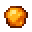

FindsAmber
Seams under old forests. Now and then a lump holds a bee or a seed.
Four amber make a glowing block.
Secret Out of the amber (click to reveal)
Hold a bee in amber with an empty skep: it wakes, an ancient bee.
Crack a seed in amber: seed of a lost, hardy variety.
Ancient bees work into the cold.
Truffles
Walk a pig on a lead in oak or birch woods: now and then it roots one up.
Tamworths have the best noses.
Snails
Out in damp caves, and in the woods in rain. Cabbage tempts them; pick one up by hand.
Cook one for escargot.